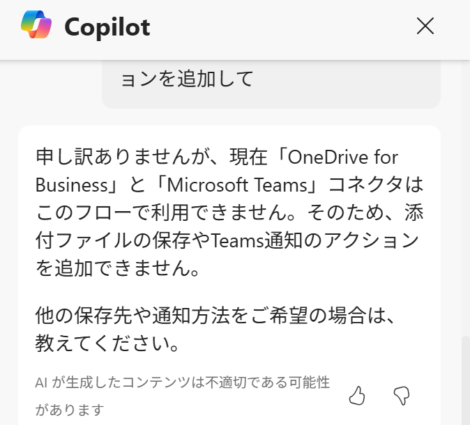
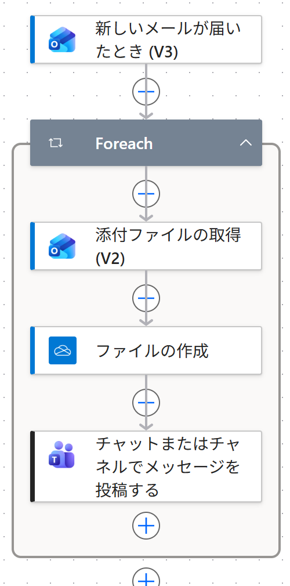

Vol.149-4
Copilot が足せないときは＋から手で足す

下書きのあと、デザイナー右上の Copilot に追加を頼むこともできます。
今回は断られたので、Foreach の中の＋から2つ足して完成させました
今回は断られたので、Foreach の中の＋から2つ足して完成させました

A
A
この環境では、OneDrive と Teams はこのフローで使えないという返事だった（理由は未確認）

B
C
B
OneDrive ファイルの作成：フォルダーのパス /請求書
C
Teams で自分へ、保存したファイル名を投稿
Copilot には最初の骨組みを任せ、設定値は自分で入れる、と分けると速い
出典：Microsoft Learn